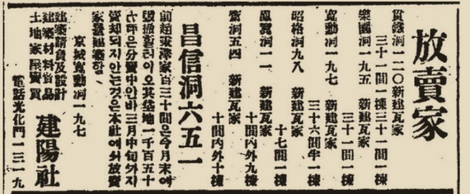

그림 · 재현
그림 · 재현오려 둔 엽서 0 장
가위로 오린 광고는 여긔 모이오. 누르면 다시 펼쳐 보내거나 저장할 수 잇소.
그 시절 신문 아래 칸에서 사람들의 욕망을 팔든 진짜 광고들. 진렬장에서 구경하고, 서랍을 열고, 마지막엔 지워진 광고까지 — 아래로 갈스록 서늘해지오.
옆으로 밀어 한 장씩 넘기시압. 글씨가 작으면 그림을 누르면 크게 보이오.
1 / 46
그림 · 재현가위로 오린 광고는 여긔 모이오. 누르면 다시 펼쳐 보내거나 저장할 수 잇소.
 여기서부터 특별 진렬
여기서부터 특별 진렬그 시절 광고가 판 것은 다섯 가지엿다 하오 — 출세 · 교양 · 건강 · 성 · 애국. 서랍을 하나씩 여시압.
경성야록 상뎜 · 약장
 진렬대 앞의 십오 년
진렬대 앞의 십오 년 그림 · 재현
그림 · 재현가튼 상품의 광고를 해마다 한 장씩 넘겨 보시압 — 옆으로 밀면 다음 해. 마지막 장에서 시대가 보이오.
※ 지면은 동아일보 · 네이버 뉴스 라이브러리. 일천구백이십 년대 몇 장의 날자는 시사일본어학원 블로그의 정리를 따라, 짝이 틀릴 수 잇소.
 그날의 신문 속으로
그날의 신문 속으로 그림 · 재현
그림 · 재현소화 십삼 년 칠월 이십팔일, 하로치 동아일보. 남아 잇는 여덟 면을 넘기며 — 광고 칸에만 불을 켜 보시압.
중일전쟁이 시작된 지 한 해. 광고는 여전히 얼골을 희게 하라 하엿고 — 마지막 면의 지구본은 일본을 한가운데 두엇소.
※ 동아디지털아카이브 소화 십삼 년 칠월 이십팔일 지면 (석간 1 · 2면은 빠짐 · 화면 아래 끝 몇 줄은 잘림). 광고 칸 표시는 눈으로 어림한 것.
 다방 구석, 신문 아래칸
다방 구석, 신문 아래칸 그림 · 재현
그림 · 재현사건이 실린 그날, 가튼 장 아래칸엔 무엇이 팔리고 잇섯나.
 새 집, 새 살림
새 집, 새 살림 그림 · 재현
그림 · 재현소화 오 년, 「새로 지은 긔와집을 내노음」. 약도의 동네를 누르면 — 광고 속 그 줄에 불이 켜지오.
약도 · 재구성 — 자리는 어림

동네를 고르시압
※ 동아일보 1930년 광고 (서울역사자료 정리). 칸수는 광고에 적힌 그대로 — 값은 적혀 잇지 안소.
 밤의 담벼락
밤의 담벼락 그림 · 재현
그림 · 재현광고에도 그 시대가 스며드럿소. 그리고 어떤 광고는 아예 깎여 나갓소.
개벽 팔월호 발매
개벽사
깎인 자리를 꾹 누르고 잇스면 — 읽히오.